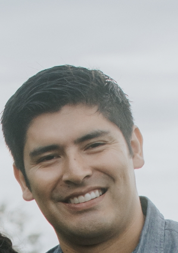

Pablo Acuna | WDD 130
Hello! My name is Pablo Acuna, and I'm originally from Argentina. In 2013, I made the exciting move to Canada, where I've been living ever since. I am a proud husband and father of three wonderful children, and family is truly at the heart of everything I do. In my free time, I love playing the piano, which has been a passion of mine for many years. Music brings me joy and helps me unwind, whether I'm playing a classical piece or something more contemporary. Spending time with my family is one of my greatest joys, whether it's enjoying a quiet weekend at home or going on outdoor adventures. I believe in the importance of creating lasting memories with my loved ones, and I cherish those moments of togetherness. Having lived in both Argentina and Canada, I appreciate the diversity of cultures and experiences that shape who I am today. Each place has left its mark on me, and I carry a piece of both countries in my heart. Through this unique combination of cultures, I've come to value the importance of adaptability, learning, and personal growth. Whether it's through music, family, or exploring new horizons, I strive to live a life full of meaning, love, and connection.